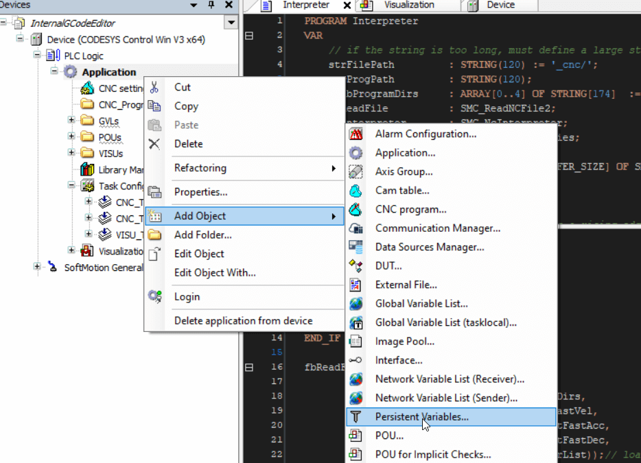

codesys 定义重启可保持型变量
无论是在 gvl 或者 pou 中都可以定义变量，默认情况下这些变量在系统重启后数据都会丢失。某些情况下我们希望变量值可以保持，系统重启后原数据也不丢失。可以在变量定义块中通过关键词 RETAIN 和 PERSISTENT 来实现。
注意 PERSISTENT 类型变量必须定义在单独的 Persistent Variables 类型 object 才能生效。而不是通常的 GVL object。
RETAIN
RETAIN 可以在热重启后保持数据：
In a POU:
VAR RETAIN
iRem1 : INT;
END_VAR
*******************
In a GVL:
VAR_GLOBAL RETAIN
gvarRem1 : INT;
END_VAR以下情况下 RETAIN 数据会被重置：
- the command Reset origin
- the command Reset cold (as opposed to persistent variables)
- a repeated program download
PERSISTENT
首先需要新建 Persistent Variables 类型 object 会放在 task 子目录下：

然后会自动创建 VAR_GLOBAL PERSISTENT RETAIN 类型全局变量文件。
PERSISTENT 可以在热重启和冷重启后保持数据：
VAR_GLOBAL PERSISTENT
iVarPers1 : DINT;
bVarPers : BOOL;
PLC_PRG.PERS: INT;
END_VAR以下情况下 PERSISTENT 数据会被重置：
- the command Reset origin
从 CODESYS V3.3.0.1 开始声明一个 VAR_GLOBAL PERSISTENT 等效于 VAR_GLOBAL PERSISTENT RETAIN or VAR_GLOBAL RETAIN PERSISTENT。
以下是各种变量定义模式下数据保持情况：
| after online command | VAR | VAR RETAIN | VAR PERSISTENT |
| Reset warm | x | x | |
| Cold reset | x | ||
| Reset origin | |||
| Download | x | ||
| Online Change | x | x | x |
参考链接
Remanent Variables - RETAIN, PERSISTENT
REMANENT VARIABLES: RETAIN VS PERSISTENT RETAIN
标签：无